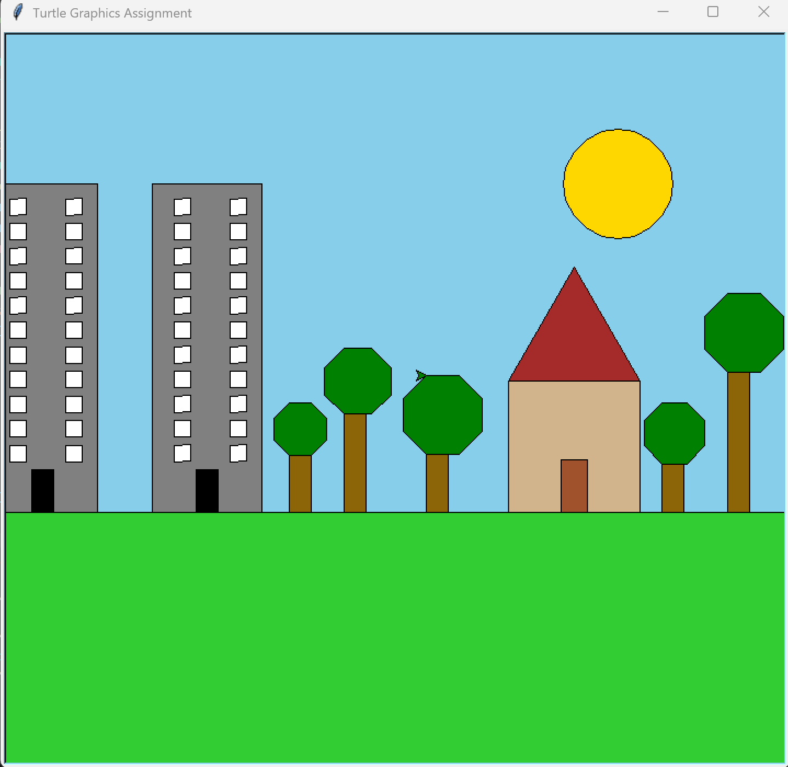

Computer Science – Functions & Abstraction
← Back to HomeIn this project, I focused on refactoring my turtle graphics code to make it more efficient and flexible. I created custom functions for trees, houses, and buildings so I could easily control their size, position, and colors with just one function call. This allowed me to quickly add more buildings and trees while keeping my code clean and organized.
import turtle
import math
def setup_turtle():
t = turtle.Turtle()
t.speed(0)
screen = turtle.Screen()
screen.title("Turtle Graphics Assignment")
return t, screen
def draw_rectangle(t, width, height, fill_color=None):
if fill_color:
t.fillcolor(fill_color)
t.begin_fill()
for _ in range(2):
t.forward(width)
t.left(90)
t.forward(height)
t.left(90)
if fill_color:
t.end_fill()
def draw_square(t, size, fill_color=None):
if fill_color:
t.fillcolor(fill_color)
t.begin_fill()
for _ in range(4):
t.forward(size)
t.right(90)
if fill_color:
t.end_fill()
def draw_triangle(t, size, fill_color=None):
if fill_color:
t.fillcolor(fill_color)
t.begin_fill()
for _ in range(3):
t.forward(size)
t.left(120)
if fill_color:
t.end_fill()
def draw_circle(t, radius, fill_color=None):
if fill_color:
t.fillcolor(fill_color)
t.begin_fill()
t.circle(radius)
if fill_color:
t.end_fill()
def draw_polygon(t, sides, size, fill_color=None):
if fill_color:
t.fillcolor(fill_color)
t.begin_fill()
angle = 360 / sides
for _ in range(sides):
t.forward(size)
t.right(angle)
if fill_color:
t.end_fill()
def draw_tree(t, height, leafsize):
draw_rectangle(t, 20, height, "darkgoldenrod4")
t.penup()
t.right(270)
t.forward(height)
t.pendown()
t.right(90)
draw_polygon(t, 8, leafsize, "green")
def draw_building(t, x, y, width=100, height=300, color="gray"):
jump_to(t, x, y)
draw_rectangle(t, width, height, color)
door_width = width * 0.2
door_height = height * 0.13
jump_to(t, x + width / 2 - door_width / 2, y)
draw_rectangle(t, door_width, door_height, "black")
window_size = height * 0.05
spacing_x = width * 0.2
spacing_y = window_size * 1.5
rows = int(height // (spacing_y * 1.2))
cols = 2
for row in range(rows):
for col in range(cols):
x_offset = spacing_x + col * (width / 1.4 - spacing_x)
jump_to(t, x + x_offset, y + door_height + spacing_y * (row + 1))
draw_square(t, window_size, "white")
def draw_house(t, x, y, size=100, base_color="tan", roof_color="brown", door_color="sienna"):
jump_to(t, x, y)
t.setheading(0)
t.right(270)
draw_square(t, size, base_color)
jump_to(t, x, y + size)
t.setheading(0)
draw_triangle(t, size, roof_color)
door_width = size * 0.2
door_height = size * 0.4
door_x = x + (size - door_width) / 2
door_y = y
jump_to(t, door_x, door_y)
t.setheading(0)
draw_rectangle(t, door_width, door_height, door_color)
def jump_to(t, x, y):
t.penup()
t.goto(x, y)
t.pendown()
def draw_scene(t):
screen = t.getscreen()
screen.bgcolor("skyblue")
jump_to(t, -400, -400)
draw_rectangle(t, 800, 300, "limegreen")
draw_house(t, 100, -100, 120)
draw_building(t, -375, -100)
draw_building(t, -225, -100)
jump_to(t, 200, 150)
draw_circle(t, 50, "gold")
jump_to(t, -100, -100)
draw_tree(t, 100, 20)
jump_to(t, -50, -100)
draw_tree(t, 150, 25)
jump_to(t, 240, -100)
draw_tree(t, 100, 23)
jump_to(t, 300, -100)
draw_tree(t, 200, 30)
jump_to(t, 25, -100)
draw_tree(t, 125, 30)
def main():
t, screen = setup_turtle()
draw_scene(t)
screen.mainloop()
main()
Here is the final image created using my refactored turtle graphics code:
